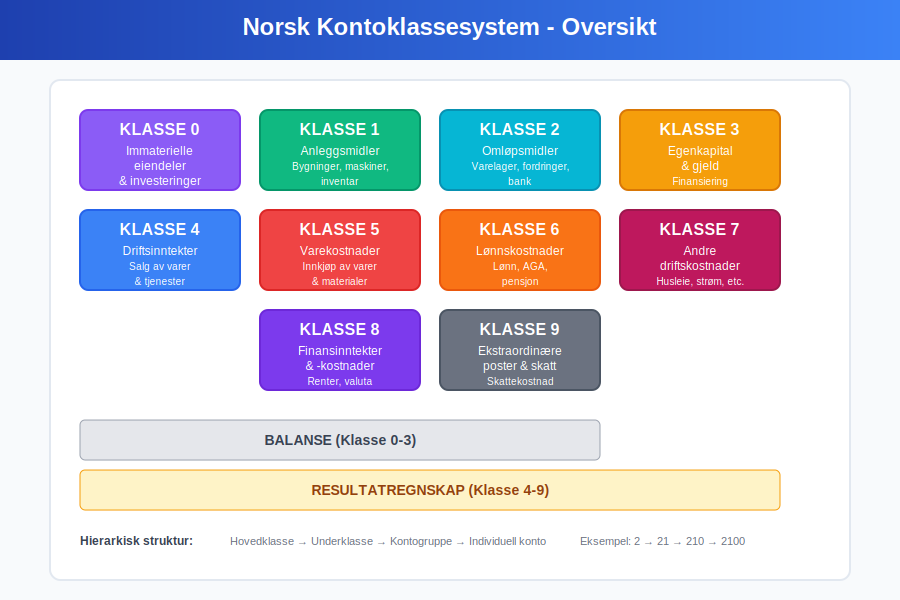
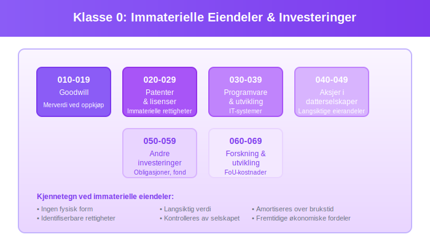
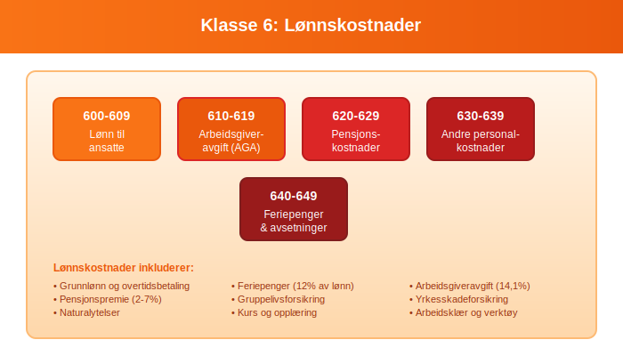
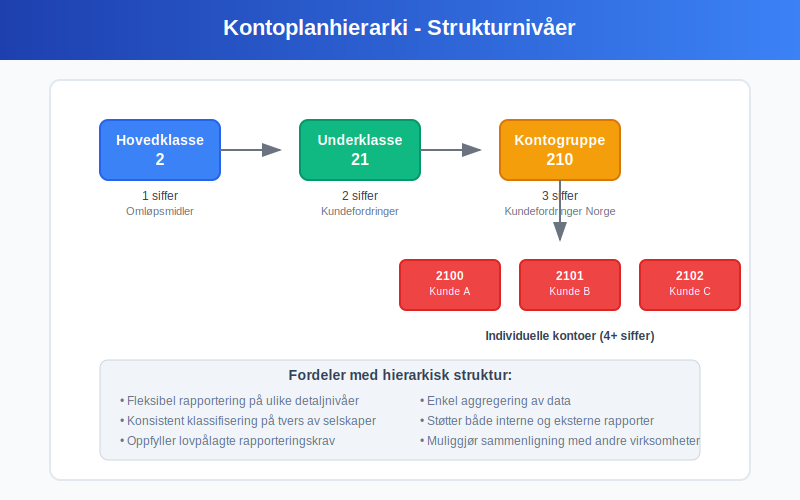
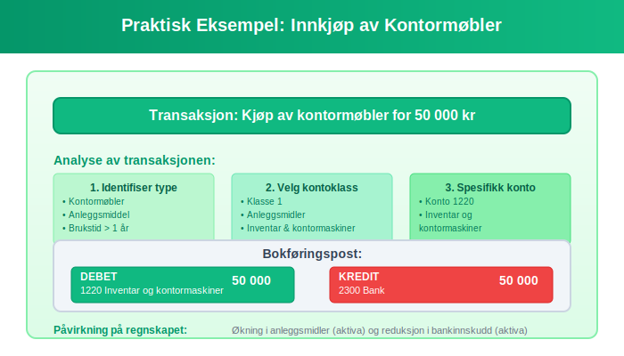
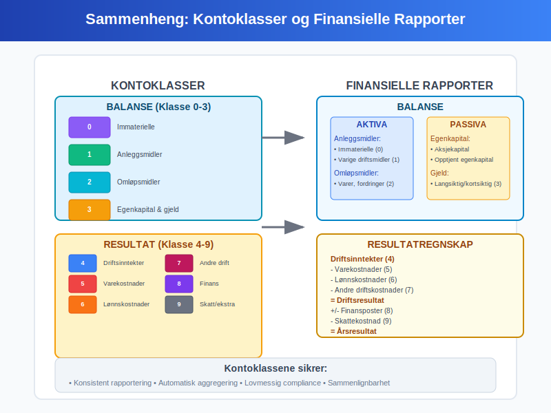
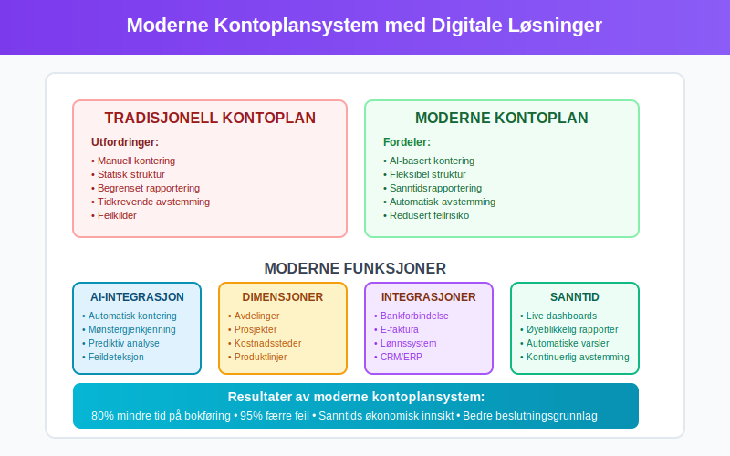

Kontoklasser er det systematiske klassifiseringssystemet som danner ryggraden i norsk bokføring og regnskap. Dette strukturerte systemet organiserer alle regnskapskontoer i logiske grupper som gjør det mulig å produsere pålitelige finansielle rapporter og oppfylle lovpålagte rapporteringskrav.
Kontoklassesystemet er fundamentalt for å opprettholde god regnskapsskikk og sikrer at alle transaksjoner registreres på en konsistent og sporbar måte i hovedboken.
For mer om individuelle regnskapskontoer og kontooppbygging, se Hva er en Regnskapskonto?.
Det Norske Kontoklassesystemet
Det norske kontoklassesystemet følger en standardisert struktur som er tilpasset norske regnskapsregler og rapporteringskrav. Systemet er bygget opp hierarkisk med ti hovedklasser som hver dekker spesifikke områder av virksomhetens økonomi.

Hovedklassene 0-9
Kontoklassesystemet er organisert i ti hovedklasser, nummerert fra 0 til 9:
| Klasse | Navn | Beskrivelse | Balansetype |
|---|---|---|---|
| 0 | Immaterielle eiendeler og investeringer | Goodwill, patenter, aksjer, obligasjoner | Aktiva |
| 1 | Anleggsmidler | Bygninger, maskiner, inventar, transportmidler | Aktiva |
| 2 | Omløpsmidler | Varelager (se Konto 1400 - Råvarer og innkjøpte halvfabrikater), kundefordringer, bankinnskudd | Aktiva |
| 3 | Egenkapital og gjeld | Egenkapital, leverandørgjeld, lån | Passiva |
| 4 | Driftsinntekter | Salgsinntekter, andre driftsinntekter | Inntekter |
| 5 | Varekostnader | Innkjøp av varer, direkte materialkostnader | Kostnader |
| 6 | Lønnskostnader | Lønn, arbeidsgiveravgift, pensjonskostnader | Kostnader |
| 7 | Andre driftskostnader | Husleie, strøm, telefon, avskrivninger | Driftskostnader |
| 8 | Finansinntekter og finanskostnader | Renteinntekter, rentekostnader, valutagevinst/-tap | Finansielle poster |
| 9 | Ekstraordinære poster og skattekostnader | Skattekostnad, ekstraordinære inntekter, ekstraordinære kostnader | Spesielle poster |
Detaljert Gjennomgang av Kontoklassene
Klasse 0: Immaterielle Eiendeler og Investeringer
Denne klassen omfatter immaterielle eiendeler og langsiktige finansielle investeringer som ikke har fysisk form, men som likevel representerer verdifulle økonomiske ressurser.

Typiske kontoer i klasse 0:
- 010-019: Goodwill
- 020-029: Patenter og lisenser
- 030-039: Programvare og utviklingskostnader
- 040-049: Aksjer i datterselskaper
- 050-059: Andre langsiktige investeringer
Klasse 1: Anleggsmidler
Anleggsmidler er fysiske eiendeler som virksomheten bruker i sin drift over lengre tid, typisk mer enn ett år. Disse eiendelene avskrives systematisk over deres brukstid.
Typiske kontoer i klasse 1:
- 100-109: Tomter og bygninger
- 110-119: Maskiner og produksjonsutstyr
- 120-129: Inventar og kontormaskiner
- 130-139: Transportmidler
- 140-149: Anlegg under utførelse
Klasse 2: Omløpsmidler
Omløpsmidler er eiendeler som forventes å bli omsatt til kontanter eller forbrukt innen ett år. Disse eiendelene utgjør en viktig del av virksomhetens arbeidskapital.

Typiske kontoer i klasse 2:
- 200-209: Varelager og råvarer
- 210-219: Kundefordringer
- 220-229: Andre kortsiktige fordringer
- 230-239: Bankinnskudd og kontanter
Klasse 3: Egenkapital og Gjeld
Denne klassen representerer virksomhetens finansieringskilder - både egenkapital fra eierne og gjeld til eksterne parter.
Typiske kontoer i klasse 3:
- 300-309: Aksjekapital og egenkapital
- 310-319: Opptjent egenkapital og fond
- 320-329: Langsiktig gjeld og lån
- 330-339: Leverandørgjeld
- 340-349: Skyldig offentlige avgifter (se Konto 1600 - Utgående merverdiavgift)
- 350-359: Annen kortsiktig gjeld
Klasse 4: Driftsinntekter
Driftsinntekter omfatter alle inntekter som kommer fra virksomhetens hovedaktivitet og kjernevirksomhet.
Typiske kontoer i klasse 4:
- 400-409: Salgsinntekter varer
- 410-419: Salgsinntekter tjenester
- 420-429: Andre driftsinntekter
- 430-439: Offentlige tilskudd
Klasse 5: Varekostnader
Varekostnader omfatter alle direkte kostnader knyttet til innkjøp og produksjon av varer som selges.
Typiske kontoer i klasse 5:
- 500-509: Innkjøp av handelsvarer
- 510-519: Direkte materialkostnader
- 520-529: Frakt og toll på innkjøpte varer
- 530-539: Beholdningsendringer
Klasse 6: Lønnskostnader
Alle kostnader knyttet til ansatte og lønn samles i denne klassen, inkludert lovpålagte avgifter og tillegg.

Typiske kontoer i klasse 6:
- 600-609: Lønn til ansatte
- 610-619: Arbeidsgiveravgift
- 620-629: Pensjonskostnader
- 630-639: Andre personalkostnader
- 640-649: Feriepenger
Klasse 7: Andre Driftskostnader
Denne klassen omfatter alle øvrige driftskostnader som ikke faller inn under varekostnader eller lønnskostnader.
Typiske kontoer i klasse 7:
- 700-709: Husleie og lokalkostnader
- 710-719: Strøm, oppvarming, vann
- 720-729: Reparasjon og vedlikehold
- 730-739: Avskrivninger
- 740-749: Kontorkostnader
- 750-759: Reise og transport
- 760-769: Markedsføring og reklame
- 770-779: Forsikringer
- 780-789: Revisjons- og regnskapshonorarer
Klasse 8: Finansinntekter og Finanskostnader
Finansielle poster som ikke er direkte knyttet til driftsaktiviteten klassifiseres her.
Typiske kontoer i klasse 8:
- 800-809: Renteinntekter
- 810-819: Utbytte og andre finansinntekter
- 820-829: Rentekostnader
- 830-839: Bankkostnader
- 840-849: Valutagevinst og -tap
Klasse 9: Ekstraordinære Poster og Skattekostnader
Denne klassen brukes for poster som ikke er en del av den ordinære driften.
Typiske kontoer i klasse 9:
- 900-909: Skattekostnad
- 910-919: Ekstraordinære inntekter
- 920-929: Ekstraordinære kostnader
Kontoplanens Hierarkiske Struktur
Kontoklassesystemet følger en hierarkisk struktur som gjør det mulig å aggregere informasjon på ulike nivåer:

Strukturnivåer
- Hovedklasse (1 siffer): F.eks. klasse 2 (Omløpsmidler)
- Underklasse (2 siffer): F.eks. 21 (Kundefordringer)
- Kontogruppe (3 siffer): F.eks. 210 (Kundefordringer Norge)
- Individuell konto (4+ siffer): F.eks. 2100 (Kundefordringer Norge)
Denne strukturen gjør det mulig å:
- Aggregere data på ønsket detaljnivå
- Produsere rapporter tilpasset ulike brukere
- Sammenligne med andre virksomheter
- Oppfylle lovpålagte rapporteringskrav
Praktisk Anvendelse av Kontoklasser
Daglig Bokføring
I den daglige bokføringen brukes kontoklassene til å sikre at alle transaksjoner registreres på riktig konto. Dette krever forståelse av:
- Transaksjonens natur: Hva slags økonomisk hendelse har skjedd?
- Påvirkning på regnskapet: Hvordan påvirker transaksjonen aktiva, gjeld, egenkapital, inntekter eller kostnader?
- Korrekt klassifisering: Hvilken kontoklass og spesifikk konto skal brukes?
Eksempel: Innkjøp av Kontormøbler
La oss se på et praktisk eksempel der et selskap kjøper kontormøbler for 50 000 kr:

Analyse:
- Transaksjon: Kjøp av kontormøbler (anleggsmiddel)
- Kontoklass: Klasse 1 (Anleggsmidler)
- Spesifikk konto: 1220 (Inventar og kontormaskiner)
- Motpost: Klasse 2 (Bank) eller klasse 3 (Leverandørgjeld)
Bokføringspost:
Debet: 1220 Inventar og kontormaskiner 50 000
Kredit: 2300 Bank 50 000
Rapportering og Analyse
Kontoklassesystemet danner grunnlaget for produksjon av alle finansielle rapporter:
Balansen
Balansen bygges opp ved å aggregere saldi fra:
- Aktiva: Klasse 0, 1 og 2
- Gjeld og egenkapital: Klasse 3
Resultatregnskapet
Resultatregnskapet baseres på:
- Inntekter: Klasse 4 og deler av klasse 8
- Kostnader: Klasse 5, 6, 7 og deler av klasse 8 og 9

Tilpasning til Virksomhetstype
Selv om det finnes en standardisert kontoplan, må denne ofte tilpasses den enkelte virksomhets behov:
Handelsbedrifter
- Fokus på klasse 2 (varelager) og klasse 5 (varekostnader)
- Detaljerte kontoer for ulike produktkategorier
- Spesielle kontoer for fakturagebyr og forsinkelsesrente
Tjenestebedrifter
- Mindre fokus på varelager
- Mer detaljerte lønnskontoer (klasse 6)
- Spesielle kontoer for honorar og konsulentytelser
Produksjonsbedrifter
- Komplekse varekontoer med råvarer, halvfabrikata og ferdigvarer
- Detaljerte anleggsmiddelkontoer (klasse 1)
- Spesielle kontoer for produksjonskostnader
Digitalisering og Moderne Kontoplaner
Moderne regnskapssystemer har gjort kontoplanene mer fleksible og intelligente:
Automatisk Kontering
- AI-basert forslag: Systemet foreslår kontoer basert på tidligere transaksjoner
- Regelbasert kontering: Automatisk kontering basert på leverandør, beløp eller beskrivelse
- Integrasjon med banker: Automatisk import og forslag til kontering
Dimensjonsregnskap
Moderne systemer støtter dimensjonsregnskap som utfyller kontoklassene:
- Avdelinger: Sporing av kostnader per avdeling
- Prosjekter: Detaljert prosjektregnskap
- Kostnadssted: Allokering av kostnader til ulike kostnadssteder

Lovkrav og Compliance
Kontoklassesystemet må oppfylle flere lovpålagte krav:
Bokføringsloven
Bokføringsloven stiller krav til:
- Systematisk registrering: Alle transaksjoner må registreres systematisk
- Sporbarhet: Det må være mulig å spore alle poster tilbake til grunnlagsdokumenter
- Oppbevaring: Regnskapsopplysninger må oppbevares i minst 5 år
SAF-T Rapportering
Standard Audit File for Tax (SAF-T) krever at kontoplanen følger spesifikke standarder for å kunne levere strukturerte data til skattemyndighetene.
MVA-rapportering
Kontoklassene må støtte korrekt MVA-rapportering med riktig klassifisering av:
- MVA-pliktige og MVA-fritatte inntekter
- Fradragsberettiget og ikke-fradragsberettiget inngående MVA
Beste Praksis for Kontoplandesign
Konsistens og Standardisering
- Følg bransjestandard: Bruk anerkjente kontoplaner for din bransje
- Konsistent nummerering: Hold deg til logiske nummereringssekvenser
- Dokumentasjon: Dokumenter hva hver konto skal brukes til
Fremtidsrettet Planlegging
- Reservér nummerserier: La det være rom for nye kontoer
- Fleksibilitet: Design kontoplanen for fremtidig vekst
- Integrasjon: Sørg for at kontoplanen fungerer med andre systemer
Opplæring og Vedlikehold
- Opplæring: Sørg for at alle som bruker systemet forstår kontoplanen
- Regelmessig gjennomgang: Gjennomgå og oppdater kontoplanen jevnlig
- Kvalitetskontroll: Implementer rutiner for å sikre korrekt kontering
Sammenheng med Andre Regnskapskonsepter
Kontoklassene er tett integrert med andre viktige regnskapskonsepter:
Hovedbok og Reskontro
Hovedboken organiseres etter kontoklassene, mens reskontroen gir detaljert informasjon om individuelle kunder og leverandører.
Bilagsbehandling
Alle bilag må knyttes til riktige kontoer i henhold til kontoklassesystemet.
Periodisering og Avstemming
Avstemming av kontoer må gjøres systematisk for hver kontoklass for å sikre regnskapets riktighet.
Kontoklassesystemet er fundamentet som gjør det mulig å produsere pålitelige og sammenlignbare finansielle rapporter. Ved å forstå og korrekt anvende dette systemet, sikrer virksomheter både lovmessighet og god økonomistyring.